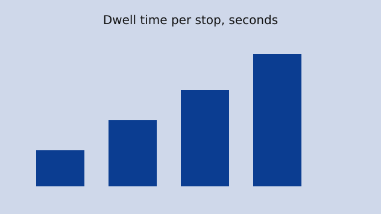

Why the tram is late: a dwell-time model
Every winter the same complaint returns: the tram is slower than the timetable promises, and the operator answers with a faster vehicle. This article builds a small model of a tram line, runs it against a season of stop-level measurements, and asks whether speed is really where the minutes go. The answer is unglamorous and it is the reason the timetable keeps slipping.
The line we use is a composite of three real routes. Each has about thirty stops, a mix of dedicated track and shared street, and a peak headway of six minutes. None of the numbers below are about a specific city; they are about the shape of the problem, which turns out to be the same everywhere we looked.
1. The question and what is at stake
A tram trip has only two kinds of time in it: time moving between stops and time standing at them. Moving time depends on distance, top speed, acceleration and the traffic signals along the way. Standing time depends on how many people board and alight, how many doors there are, whether fares are checked on board, and how long the driver waits for a straggler. The timetable is a promise about the sum of the two.
The stakes are simple. A tram that runs two minutes late at a six-minute headway has lost a third of its slot, and the tram behind it inherits a crowd. Late trams get later; this is the bunching effect, and every operator knows it. What is less often asked is which of the two kinds of time is doing the damage, because the remedy for one is expensive and the remedy for the other is cheap.
Operators tend to reach for the moving-time remedy first. New vehicles have better acceleration and a higher top speed, and a procurement announcement is a visible act. The standing-time remedy, by contrast, is a matter of doors, platforms and fare rules, and it does not photograph well.
2. Building the model
The model has one tram, thirty stops and a clock. Between stops it moves at a fixed cruising speed with a fixed acceleration and braking profile, so the moving time for a segment is a function of its length alone. At each stop it waits for a dwell time that we draw from the measured distribution for that stop and that hour. Nothing else happens: no signals, no traffic, no weather.
This is deliberately too simple. The point of the first run is not to reproduce a real day but to see what the timetable would look like if the only thing that varied was the dwell. If that alone produces the lateness we observe, the case for a faster tram is weak before we add anything else.
The dwell distribution is the heart of the model, and it is where the surprise lives: dwell time, not speed, sets the timetable. We will return to that sentence twice more, because it is the one that the measurements keep confirming.
3. Running the line
We run the model for a full peak hour, ten trams at six-minute headways, and record the arrival time at every stop. Then we repeat the run with the cruising speed raised by a fifth, which is roughly the gain a new vehicle generation offers on a mixed route. The change in end-to-end trip time is the number we care about.
The first run produces a lateness curve that looks very much like the real one: trams leave the depot on time, drift late through the centre, and arrive at the far terminus between two and four minutes behind schedule. The curve bends where the busy stops are. Nothing about speed has changed between the beginning and the end of the line; only the dwell has.
The second run, with the faster tram, moves the curve down by about forty seconds at the terminus. Forty seconds is real, but it is not two to four minutes, and it is spent at the very next long dwell. A faster tram arrives earlier at the busy stop and waits there longer, because more of the crowd has gathered by the time the doors open.
4. What the measurements say
The stop-level measurements cover one autumn and one winter season on the three routes. Each record is a door-open and door-close timestamp, a passenger count from the automatic counters, and the scheduled and actual arrival time. There are just under two hundred thousand records after cleaning.
The measurements do not support the claim that a faster tram shortens the trip; the gain is spent at the stops.
Across all three routes, the median dwell at the ten busiest stops is between thirty-five and fifty seconds, against a timetabled twenty. The median moving time between stops is within four seconds of the timetable. In other words the schedule is roughly right about how fast the tram moves and badly wrong about how long it stands still.
The counters also show why. Boarding time per passenger rises steeply once the doorway is crowded, and the fare-check routes have a boarding time per passenger about twice that of the routes where fares are checked off the vehicle. That factor of two is the difference between a stop that takes twenty seconds and one that takes forty.
5. Changing the variable
If the dwell is the lever, the model should respond to it. We rerun the peak hour with the boarding time per passenger halved, which is the measured effect of moving fare checks off the vehicle, and leave the speed at its original value. The terminus lateness drops from two to four minutes to under one minute, and the bunching largely disappears.
The same experiment with all doors opened at every stop, which some operators still do not do, recovers about a minute on its own. Neither change costs a vehicle. Both cost a change in rules, and the second costs some platform work where the doors would open onto nothing.
The lesson repeats: dwell time, not speed, sets the timetable. A tram that stands still for less time is a faster tram in every way the passenger can feel, and it does not need a new motor.
6. Where the model is wrong
The model has no signals and no traffic, and on shared street sections both matter. A tram held at a red light loses time that has nothing to do with dwell, and on two of the three routes the street sections account for about a fifth of the moving time. Signal priority would recover some of that, and it is a fair criticism that the model cannot say how much.
It also treats the dwell distribution as fixed, when in reality the distribution depends on the lateness itself: a late tram meets a bigger crowd, and a bigger crowd makes it later still. The measured distributions already contain this feedback, so the model inherits it, but it cannot separate the cause from the effect without a more careful design than we have here.
What the model does show, without any of those refinements, is that if you hold the moving time exactly at its timetabled value and let only the standing time vary as measured, you reproduce the whole shape of the observed lateness curve, including the place where it bends and the size of the gap at the terminus, and that is the finding a procurement decision should be answering to.
7. Putting it together
The picture that emerges is consistent across the three routes. The timetable is right about movement and wrong about standing. The expensive remedy buys forty seconds that the next busy stop takes back. The cheap remedies buy minutes. This is not an argument against new trams; it is an argument about the order in which to spend.

There is a version of this story for buses, for metro lines with short platforms, and for airport gates. Wherever a vehicle spends a large share of its cycle standing still with its doors open, the doors are the schedule.
8. Method notes
The counters undercount at the busiest doors when passengers board two abreast, and we corrected for this with a manual sample of forty stop events per route. The correction raised the boarding counts by about six percent and did not change any of the conclusions. The dwell timestamps come from the door sensors and are accurate to the second.
The model code is a few hundred lines and runs in seconds. It draws each dwell independently from the measured distribution for that stop and hour, which is the simplification discussed in the section on limits. The random seed is fixed so that every run in this article is reproducible.
One more time, because it is the whole article in a sentence: dwell time, not speed, sets the timetable. Measure the doors before you buy the motor.